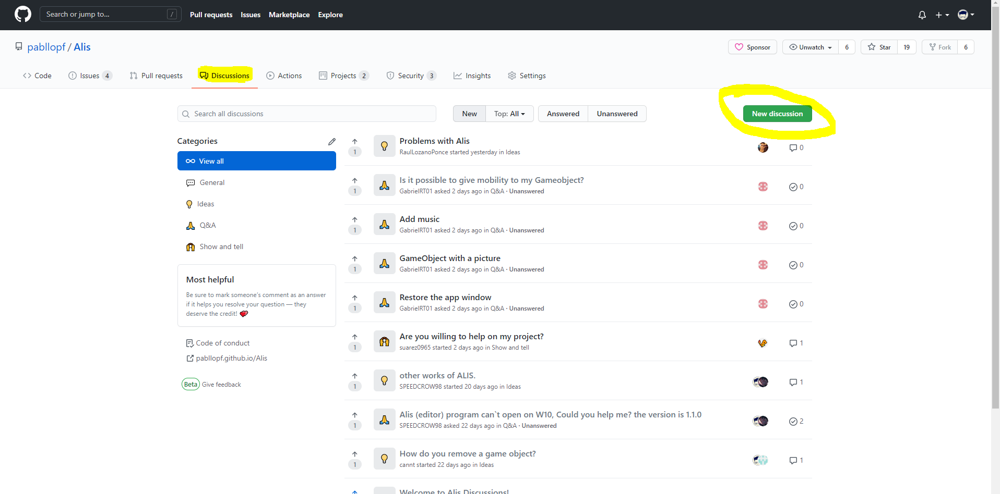

|
Alis Framework
1.3.6
Develop the video games of your dreams.
|


|
|
Alis Framework
1.3.6
Develop the video games of your dreams.
|
|
Durante la fase de pruebas e incluso después de su publicación aparecieron un conjunto de cuestiones que se repetían con frecuencia, es por este motivo, que se ha optado por incluir esta sección dentro del manual.
La respuesta es no. Actualmente se está trabajando en buscar una solución para los usuarios que utilicen la versión de visual studio 2017.
La respuesta es sí y no. Si estás trabajando únicamente con el Core o las Tools no debería de existir problemas al momento de migrar a una nueva versión. Sin embargo, si estabas trabajando con una versión anterior del Editor, todavía no existe la capacidad de migrar tu proyecto a la versión más reciente.
Algunos usuarios reportan que al intentar cargar un proyecto de ejemplo no pueden e incluso se cierra el Editor. En estos casos se recomienda abrir el archivo "Project.json" que se encuentra dentro del proyecto y actualizar los directorios que aparecen con el directorio que se encuentra ahora mismo el proyecto.
La respuesta es sí. Desde un primer momento se tuvo en cuenta esta posibilidad, permitiendo en la actualidad poder utilizar las tools en cualquier proyecto software, incluso si no se trata de un videojuego.
La respuesta es sí y no. Por una parte, es cierto que siempre es conveniente saber al menos un poco de programación para sacarle el máximo partido posible al framework. Sin embargo, si tu caso es el de una persona que no sabe absolutamente nada de programación no te preocupes, ya que en la comunidad te podremos ayudar en lo que necesites y existen varios ejemplos preparados para facilitarte la tarea.
Al ser un proyecto que está en continuo crecimiento es normal que puedan surgir dudas o problemas derivados de nuevas versiones u otros temas, es por esto, que te facilitamos distintas formas de comunicación directa para que en ningún momento te sientas solo y puedas recibir la ayuda que necesites.
Desde un inicio se ha escuchado a la comunidad y es algo que seguiremos haciendo, por ello, te ofrecemos una sección llamada "discussions" a modo de foro público donde podrás realizar todo tipo de consultas.
En la página oficial del proyecto existe una sección llamada 'Discussions'. En dicha sección se puede participar en los distintos hilos del foro que se encuentren abiertos o se puede crear un hilo nuevo de la siguiente forma:
{width="90%"}
Tal y como se puede ver en la imagen anterior, existe un botón de color verde que dice 'New discussion'. Al pulsar dicho botón se mostrará un formulario que deberá de rellenarse de la siguiente manera:
 {width="90%"}
{width="90%"}
En esta imagen se puede observar el formato de un formulario para realizar una nueva participación en el foro.
Como es normal, siempre puede ocurrir un fallo o error por parte del software que nos perjudica en la interacción con este. Por este motivo se ha preparado un panel de incidencias donde puedes abrir un canal de comunicación directo con el desarrollador para que en el menor tiempo posible dicho problema se pueda solucionar.
En la página oficial del proyecto existe una sección llamada 'Issues'. En dicha sección se puede reportar incidencia que se encuentren utilizando Alis.
 {width="90%"}
{width="90%"}
Tal y como se puede observar en la imagen anterior, existe un botón llamado 'New issue' que te permite crear una nueva incidencia. Después te pedirá que selecciones el tipo de incidencia que te gustaría reportar:
 {width="90%"}
{width="90%"}
Y una vez decidas que tipo de incidencia te gustaría reportar, solo te quedaría rellenar el formulario. Dicho formulario ya incluye una plantilla preparada para que simplemente rellenes lo que necesitas.
 {width="90%"}
{width="90%"}